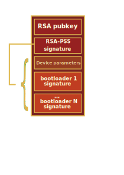
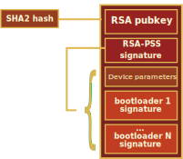
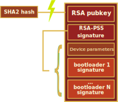
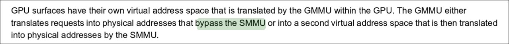
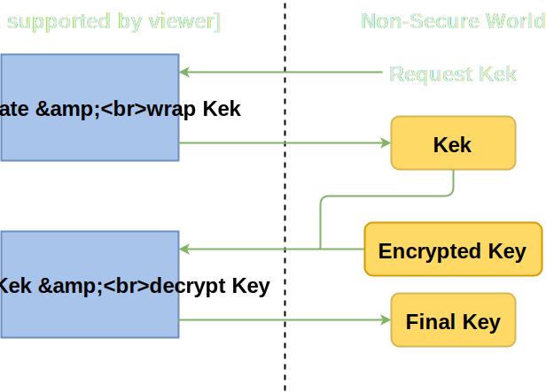
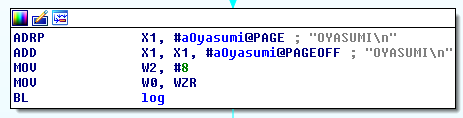
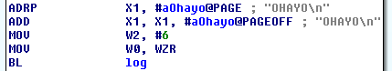
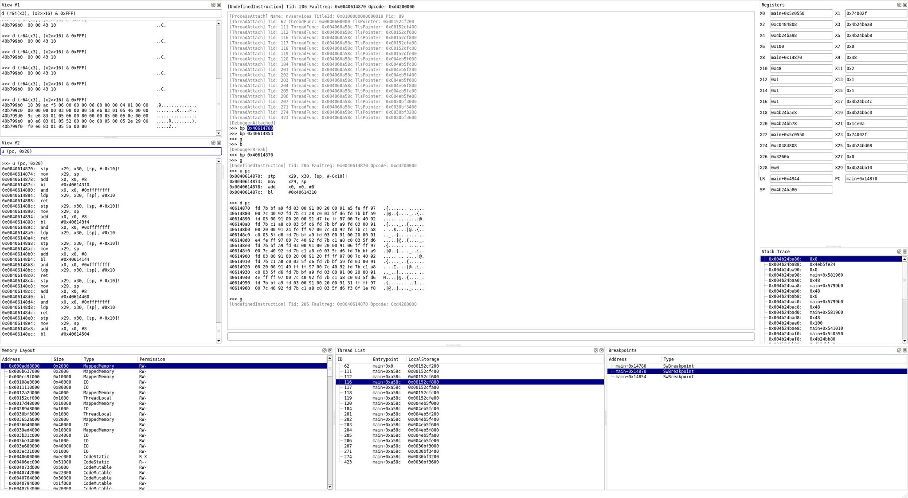

Switch Security
Homebrew on the Horizon
@qlutoo, @derrekr6, @naehrwertHardware - Main Unit
4x ARM Cortex-A57 @1GHz
Maxwell GPU @384MHz/768Mhz
4 GB DRAM
Hardware - Joy Cons
Accel/Gyro/NFC/IR
"HD Rumble"
No security at all
NVIDIA "ODNX02-A2"
Off-the-shelf Tegra X1
3000+ page Reference Manual available online
LinuxForTegra - Linux drivers
| DRAM 2x 2GB |
| NAND 32GB |
| BCM4356 Wifi |
|
ARM7 (boot cpu)
IRAM 256kB BootROM 96kB |
ARMv8 Cortex-A57 (4x)
TZRAM 64kB |
||||
| GPU Maxwell GM20B | |||||
| SE AES/RSA acceleration | FUSE | MC | TSEC | ARMv7 Cortex-A9 Audio DSP | |
| UART GPIO | PCIe | USB | eMMC | HDMI | I2C SPI |
Fuses
Downgrade protection 32 bits
SBK (Secure Boot Key) 128 bits
SHA256 of RSA Public key 256 bits
Bootrom patch data 320 bytes
Jetson TX1 Devkit $700
Switch Software
Does it run FreeBSD? No. Stop asking.
Custom microkernel "Horizon" 💖
All drivers in userspace "Services"
NVIDIA graphics driver Custom NVN API
3DS Comparison
All userland processes have ASLR!
Save game exploits much much harder
Everything was rewritten and renamed
exheader→npdm, tmd→cmnt, apt→am, etc..
No "arm9"
No complicated security processor without memory protection
Security model
| TrustZone crypto | |||||
| Kernel process isolation, IOMMU | |||||
| fs | ncm | sm | pm | ldr | spl |
| Microservices least privilege | |||||
| Game/Application untrusted | |||||
Application sandbox (games)
Syscall filtering ~45 out of ~103 in total
Service whitelist ~40 'user' services
Per-process "filesystems"
Only access own savegame, gamedata
Can't mount sdcard
Service sandbox (drivers)
Syscall filtering ~65 out of ~103 in total
Service whitelist
No file access at all*
Sometimes MMIO mapped
But, kernel maintains IOMMU for all bus masters
Base service sandbox (fs+ldr+pm+sm+spl)
Bundled inside the kernel package
Syscall filtering ~65 out of ~103 in total
No service whitelist
No filesystem whitelist
Going places...
Security model
| TrustZone crypto | |||||
| Kernel process isolation, IOMMU | |||||
| fs | ncm | sm | pm | ldr | spl |
| Microservices least privilege | |||||
| Game/Application untrusted | |||||
WebKit [Fixed in 2.1.0, 3.0.0, 3.0.1, ...]
Used for eShop, manuals, EULAs, ...
Always over (https://) or local data (file:///)
But 2.0.0 introduced WifiWebAuth:
Renders arbitrary HTML+JS from untrusted wifi
6-months old "Pegasus exploit"
Just works, lol
Symbolsssss
$ strings sdk.elf | grep _Z | c++filt
nn::svc::aarch64::lp64::ReplyAndReceiveLight(nn::svc::Handle)
nn::svc::aarch64::lp64::SleepSystem()
nn::svc::aarch64::lp64::StartProcess(nn::svc::Handle, int, int, unsigned long)
nn::svc::aarch64::lp64::CreateProcess(nn::svc::Handle*, nn::svc::lp64::CreateProcessParameter const&, unsigned int const*, int)
nn::svc::aarch64::lp64::GetProcessInfo(long*, nn::svc::Handle, nn::svc::ProcessInfoType)
nn::svc::aarch64::lp64::ManageNamedPort(nn::svc::Handle*, char const*, int)
nn::svc::aarch64::lp64::MapProcessMemory(unsigned long, nn::svc::Handle, unsigned long, unsigned long)
nn::svc::aarch64::lp64::TerminateProcess(nn::svc::Handle)
nn::svc::aarch64::lp64::CallSecureMonitor()
nn::svc::aarch64::lp64::QueryProcessMemory(nn::svc::lp64::MemoryInfo*, nn::svc::PageInfo*, nn::svc::Handle, unsigned long)
nn::svc::aarch64::lp64::UnmapProcessMemory(unsigned long, nn::svc::Handle, unsigned long, unsigned long)
nn::svc::aarch64::lp64::CreateResourceLimit(nn::svc::Handle*)
nn::svc::aarch64::lp64::MapProcessCodeMemory(nn::svc::Handle, unsigned long, unsigned long, unsigned long)
nn::svc::aarch64::lp64::UnmapProcessCodeMemory(nn::svc::Handle, unsigned long, unsigned long, unsigned long)
nn::svc::aarch64::lp64::SetProcessMemoryPermission(nn::svc::Handle, unsigned long, unsigned long, nn::svc::MemoryPermission)
nn::svc::aarch64::lp64::SetResourceLimitLimitValue(nn::svc::Handle, nn::svc::LimitableResource, long)
nn::crypto::detail::bigint_cmp(unsigned int const*, unsigned int const*, int)
nn::crypto::detail::bigint_div(unsigned int*, unsigned int*, unsigned int const*, int, unsigned int const*, int)
nn::crypto::detail::bigint_mod(unsigned int*, unsigned int const*, int, unsigned int const*, int)
nn::crypto::detail::bigint_copy(unsigned int*, unsigned int const*, int)
nn::crypto::detail::bigint_mult(unsigned int*, unsigned int const*, unsigned int const*, int)
nn::crypto::detail::bigint_zero(unsigned int*, int)
nn::crypto::detail::bigint_digits(unsigned int const*, int)
nn::crypto::detail::bigint_iszero(unsigned int const*, int)
nn::crypto::detail::bigint_add_mod(unsigned int*, unsigned int const*, unsigned int const*, unsigned int const*, int)
nn::crypto::detail::bigint_mod_inv(unsigned int*, unsigned int const*, unsigned int const*, int)
nn::crypto::detail::bigint_sub_mod(unsigned int*, unsigned int const*, unsigned int const*, unsigned int const*, int)
nn::crypto::detail::bigint_mod_mult(unsigned int*, unsigned int const*, unsigned int const*, unsigned int const*, int)
nn::crypto::detail::bigint_digit_mult(unsigned int*, unsigned int, unsigned int)
nn::fs::EraseGameCard(nn::fs::GameCardSize, unsigned long)
nn::fs::WriteToGameCard(long, void*, unsigned long)
nn::fs::GetGameCardIdSet(nn::gc::GameCardIdSet*)
nn::fs::GetGameCardHandle(unsigned int*)
nn::fs::IsGameCardInserted()
nn::fs::GetGameCardAsicInfo(nn::gc::RmaInformation*, void const*, unsigned long)
nn::fs::GetGameCardAttribute(nn::fs::GameCardAttribute*, unsigned int)
nn::fs::GetGameCardImageHash(void*, unsigned long, unsigned int)
The PuyoPuyo trick [Unfixed]

Security model
| TrustZone crypto | |||||
| Kernel process isolation, IOMMU | |||||
| fs | ncm | sm | pm | ldr | spl |
| Microservices least privilege | |||||
| Game/Application untrusted | |||||
pl:u [Fixed in 3.0.0]
User accessible service
Cmds 1,2,3 take a single s32 input
Big values ⟹ Crashes
Array out-of-bounds read
On the .bss segment, negative index allows dumping .text
NS service code dumped!
Security model
| TrustZone crypto | |||||
| Kernel process isolation, IOMMU | |||||
| fs | ncm | sm | pm | ldr | spl |
| Microservices least privilege | ns | ||||
| Game/Application untrusted | |||||
Security model
| TrustZone crypto | |||||
| Kernel process isolation, IOMMU | |||||
| fs | ncm | sm | pm | ldr | spl |
| Microservices least privilege | ns | ||||
| Game/Application untrusted | |||||
smhax [Fixed in 3.0.1]
Services are fetched via SM:
svcConnectToNamedPort(&sm_handle, "sm:");
smInitialize(sm_handle); // Send pid
smGetService(sm_handle, &fs_handle, "fsp-srv");
svcCloseHandle(sm_handle);What if we skip smInitialize()?
m_pid will uninitialized (it will be zero)
SM thinks we are pid 0
Gets us access to all services, lol
Security model
| TrustZone crypto | |||||
| Kernel process isolation, IOMMU | |||||
| fs | ncm | sm | pm | ldr | spl |
| Microservices least privilege | ns | ||||
| Game/Application untrusted | |||||
How binaries are launched...
| ⟶ pm:shell LaunchTitle | ⟶ ldr:pm CreateProcess | ⟶ fsp-ldr MountCode |
How binaries are launched...
| ⟶ pm:shell LaunchTitle | ⟶ ldr:pm CreateProcess | ⟶ fsp-ldr MountCode |
Dumping binaries...
Trying to connect fsp-ldr gives error 0x615
Kernel enforces only one session at a time
If we crash Loader, maybe the session will be released...
ldr:ro cmd 0
Crashes when you give it a thread handle
Security model
| TrustZone crypto | |||||
| Kernel process isolation, IOMMU | |||||
| fs | ncm | sm | pm | ldr | spl |
| Microservices least privilege | ns | ||||
| Game/Application untrusted | |||||
Getting kernel
Black-box testing is fun
...except that it isn't.
- Switch uses a microkernel
- ASLR in privileged services
Why not start at the other end?
Boot sequence
Publicly documented by NVIDIA
NVIDIA BootROM for ARM7 ("BPMP")
Not custom, except a few patches
BootROM loads BCT and 2nd stage loader from eMMC
Recovery mode is accessible, but requires N's private RSA key
Dumping the eMMC is pretty easy
Keyblob key is only available to Pkg1Ldr
We need code execution in Pkg1Ldr
How to dump keys
We glitched 3DS and got the keys.
We glitched WiiU and got the keys.
So, we glitch the Switch and get the keys...?
How is Pkg1 verified?
BCTs
BCTs
BCTs
Timing
Tracing the eMMC bus...
t=0.047733s, diff 0.000026s, MMC_READ_SINGLE_BLOCK addr: 0x2600 t=0.047838s, diff 0.000105s, MMC_SEND_STATUS t=0.049004s, diff 0.001166s, MMC_GO_IDLE_STATE
When BCT validation fails, the next one is read
t=1.656546s, diff 0.000026s, MMC_READ_SINGLE_BLOCK addr: 0x2600 t=1.656648s, diff 0.000102s, MMC_SEND_STATUS t=1.656700s, diff 0.000052s, MMC_READ_SINGLE_BLOCK addr: 0x2800
BootROM leaks time of check.
Glitching setup
Desoldered caps on ARM7's voltage rail
FPGA-driven MOSFETs to control power supply
Bit-bang'd eMMC CLK
✓ All keys dumped
✓ Got all binaries
Kernel
Mapped at a fixed address
0xFFFFFFFFBFC00000: R-X--X
Kernel
Mapped at two fixed addresses
0xFFFFFFFFBFC00000: R-X--X
0xFFFFFFFE00000000: RW----
All objects are allocated using SlabHeaps
Use-after-frees more difficult to exploit
Kernel cannot execute userland code
Privileged Execute Never bit
Hmm [Fixed in 3.0.2]
0xFFFFFFFFBFC00000-0xFFFFFFFFBFC46000 R-X--X
They accidentally mapped kernel executable in userspace, lol
Mostly useless
Can use gadgets from kernel in userspace
"ASLR bypass"
SMMU (IOMMU)
NVIDIA design
Implemented in the Memory Controller (MC)
IOMMU for all "non-CPU" bus masters
Every bus master has an ASID, each ASID has a pagetable
Kernel maintains pagetable
Enforces (DMA access ⊆ process heap)
How to bypass the SMMU
- Open the official datasheet
- Search for "bypass the SMMU": 
GMMU attack
GPU can bypass the SMMU
GMMU entry that has set bit 31 will bypass translation
In hardware, unfixable
Kernel cannot enforce process isolation for the GPU driver
Nvidia thank you!
mchammer [Fixed in 2.0.0]
Or we bypass SMMU another way...
Loader trusts permissions that are given from FS
Ask for permission to memory controller IO
and disable SMMU:
uint32_t* g_McPtr32;
// Get ASLR'd pointer to IO region.
svcQueryIoMapping(&g_McPtr32, 0x70019000, 0x1000);
// Assign ASID 0 to the device.
g_McPtr32[0xABC/4] = 0;mchammer [Fixed in 2.0.0]
We can DMA all over entire DRAM.
Just DMA all over kernel...?
No :(
Kernel is protected by extra DMA carveout
mchammer [Fixed in 2.0.0]
But when we look at KProcessHandleTable::SetSize:
if (handle_table_size > 40) {
m_HandleTable = KPool::Allocate(...);
}
else {
m_HandleTable = &m_SmallInternalTable[0];
}If more than 40 handles, the handle table is allocated in the pool.
Pool is not protected by carveout.
mchammer [Fixed in 2.0.0]
Create a fake KSharedMemory
... with share_addr == kernel_addr
Inject it into the handle table
... and map it using svcMapSharedMemory() syscall
Kernel pwned
mchammer [Fixed in 2.0.0]
// Construct a fake KMemoryBlock encompassing kernel.
KMemoryBlock* fake_blk = (KMemoryBlock*) &g_dram_ptr[0x300];
fake_blk->BasePtr = DRAM_KERNELADDR(0x800A0000ull); // <-- Kernel base address
fake_blk->Size = KERNEL_SIZE/0x1000;
// Construct a fake KMemoryBlockEntry referencing above block.
KMemoryBlockEntry* fake_entry = (KMemoryBlockEntry*) &g_dram_ptr[0x200];
fake_entry->BlockPtr = DRAM_KERNELADDR(0x80000300ull);
// Construct a fake KSharedMemory object with above block list.
KSharedMemory* fake_shmem_obj = (KSharedMemory*) &g_dram_ptr[0x100];
fake_shmem_obj->VtablePtr = SHAREDMEMORY_VTABLE;
fake_shmem_obj->RefCount = 100;
fake_shmem_obj->Blocks_EntryPtrNext = DRAM_KERNELADDR(0x80000200);
fake_shmem_obj->RemotePerm = PERM_RW;Security model
| TrustZone crypto | |||||
| Kernel process isolation, IOMMU | |||||
| fs | ncm | sm | pm | ldr | spl |
| Microservices least privilege | ns | ||||
| Game/Application untrusted | |||||
And why we can largely ignore it
The ARMv8 supports TZ
Code running under secure EL3 called SecureMonitor
In reality it monitors nothing though
SecureMonitor
It is the first code that runs on the main CPU
Tasks
- Booting the Horizon kernel
- Cryptography (via Tegra SE)
- Starting/stopping CPU cores
- Sleep mode
Thus not important for homebrew
Interlude: Tegra SE
Hardware crypto engine for AES, SHA, RSA, RNG
Keyslot concept: 16 for AES, 2 for RSA
Keyslots can be locked individually
Crypto operations on: input/output registers, keyslots, memory (via DMA)
Cryptography
Sleep mode
Power management controller (PMC) controls sleep/wake transition
On system sleep the entire SoC is powered down...
...except PMC, DRAM is put into self-refresh mode
Sleep mode
The SecureMonitor
Waking up
The bootrom
Warmboot
UntrustZone
Kernel happily maps lower DRAM, PMC, etc.
But these are crucial in the wakeup process
Poke them a bit and...
Gain secure EL3 code execution, from usermode
Security model
| TrustZone crypto | |||||
| Kernel process isolation, IOMMU | |||||
| fs | ncm | sm | pm | ldr | spl |
| Microservices least privilege | ns | ||||
| Game/Application untrusted | |||||
nxdbg
libnx
Kernel primitives Mutexes, Threads, IPC
Fully working
Network, Filesystem, USB, Controller inputs
Framebuffer
libnx
Reversing proprietary code is fun
Homebrew is fun
Where we need help
GPU acceleration (NVN reimplementation?)
Audio support
Make your own games!!!
There will be homebrew.
Soon.
In collaboration with team Reswitched
Get on 3.0.0
Stay on 3.0.0
Thanks
Thanks to:
@ylws8SciresM, hexkyz, andeor, thexyz, WntrMute, team Reswitched, mission20000, shinyquag, fincs, shofel2, nedwill, smea ...
Nvidia
Nintendo 💕
#switchdev @ EFNet